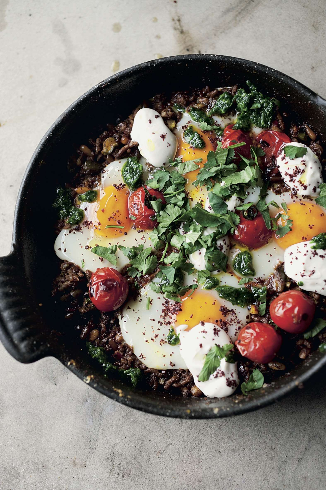

Braised eggs with lamb, tahini & sumac

This concoction is Jerusalem fusion food at its very best. It incorporates traditional elements that are purely Palestinian with ingredients characteristic of various Jewish cuisines, and puts them all together in a completely non-traditional way. It was inspired by a very young classic, Hamshukah, signature dish at Machneyuda, the market restaurant that currently serves the most innovative food in town.
Yoghurt sauce
Heat up the olive oil in a medium, heavy-based frying pan for which you have a tight-fitting lid. Add the onion and garlic and sauté on a medium-high heat for 6 minutes to soften and colour a bit. Add the minced lamb and brown well, 5–6 minutes, on a high heat. Season with the sumac, cumin, ¾ teaspoon of salt and some black pepper and cook for another minute. Off the heat, stir in the nuts, harissa and preserved lemon and set aside.
While the onion is cooking, heat up a separate small cast-iron or other heavy pan. Once piping hot, add the cherry tomatoes and char on a high heat for 4–6 minutes, tossing the pan occasionally, until slightly blackened on the outside. Set aside.
Prepare the yoghurt sauce by simply whisking together all the ingredients with a pinch of salt. It needs to be thick and rich, but you may need to add a splash of water if it is stiff.
You can leave the meat, tomatoes and sauce at this stage for up to an hour. When you are ready to serve, reheat the meat, add the chicken stock and bring to the boil. Make 4 small wells in the mix and break an egg into each. Cover the pan with a lid and cook the eggs on a low heat for 3 minutes. Place the tomatoes on top, avoiding the yolks, cover again and cook for 5 minutes, until the egg whites are cooked but the yolks are still runny.
Remove from the heat and dot with dollops of yoghurt sauce, sprinkle with sumac and finish with picked coriander or zhoug. Serve at once.